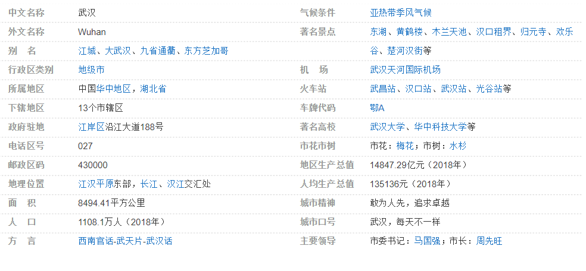

武汉 （湖北省省会、副省级市）
武汉，简称“汉”，别称“江城”，是湖北省省会，中部六省唯一的副省级市和特大城市，中国中部地区的中心城市，长江经济带核心城市，全国重要的工业基地、科教基地和综合交通枢纽，中央军委联勤保障部队驻地。全市下辖13个市辖区，总面积8494.41平方公里，2018年常住人口1108.1万人，地区生产总值1.48万亿元。
武汉地处江汉平原东部、长江中游。世界第三大河长江及其最大支流汉江横贯市境中央，将武汉中心城区一分为三，形成武汉三镇隔江鼎立的格局，市内江河纵横、湖港交织，水域面积占全市总面积四分之一，构成滨江滨湖的水域生态环境。武汉有“九省通衢”之称，是中国内陆最大的水陆空交通枢纽、长江中游航运中心，其高铁网辐射大半个中国，是华中地区唯一可直航全球五大洲的城市。
武汉是国家历史文化名城、楚文化的重要发祥地，境内盘龙城遗址有3500年历史。春秋战国以来，武汉一直是中国南方的军事和商业重镇，明清时期成为“楚中第一繁盛处”、“天下四聚”之一。清末洋务运动促进了武汉工商业兴起，使其成为近代中国重要的经济中心，被誉为“东方芝加哥”。武汉是中国民主革命的发祥地，武昌起义作为辛亥革命的开端，具有重要历史意义。
2016年3月，《长江经济带发展规划纲要》将武汉列为超大城市；12月，国家发改委明确要求武汉加快建成以全国经济中心、高水平科技创新中心、商贸物流中心和国际交往中心四大功能为支撑的国家中心城市。
2019年10月，第七届世界军人运动会将在武汉举行。
